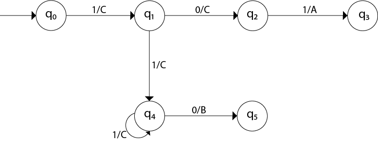
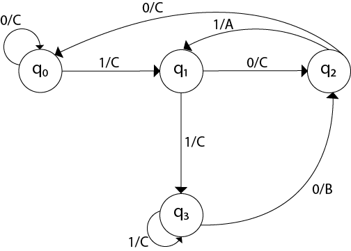

Mealy Machine
- A Mealy machine is a machine in which output symbol depends upon the present input symbol and present state of the machine.
- In the Mealy machine, the output is represented with each input symbol for each state separated by /.
- The Mealy machine can be described by 6 tuples (Q, q0, ∑, O, δ, λ') where
- Q: finite set of states
- q0: initial state of machine
- ∑: finite set of input alphabet
- O: output alphabet
- δ: transition function where Q × ∑ → Q
- λ': output function where Q × ∑ →O
EXAMPLE 1
Q. Design a Mealy machine for a binary input sequence such that if it has a substring 101, the machine output A, if the input has substring 110, it outputs B otherwise it outputs C.
SOLUTION. Solution: For designing such a machine, we will check two conditions, and those are 101 and 110. If we get 101, the output will be A. If we recognize 110, the output will be B. For other strings the output will be C.
The partial diagram will be:

Now we will insert the possibillities of 0's and 1's for each state.Thus the mealy machine become:
